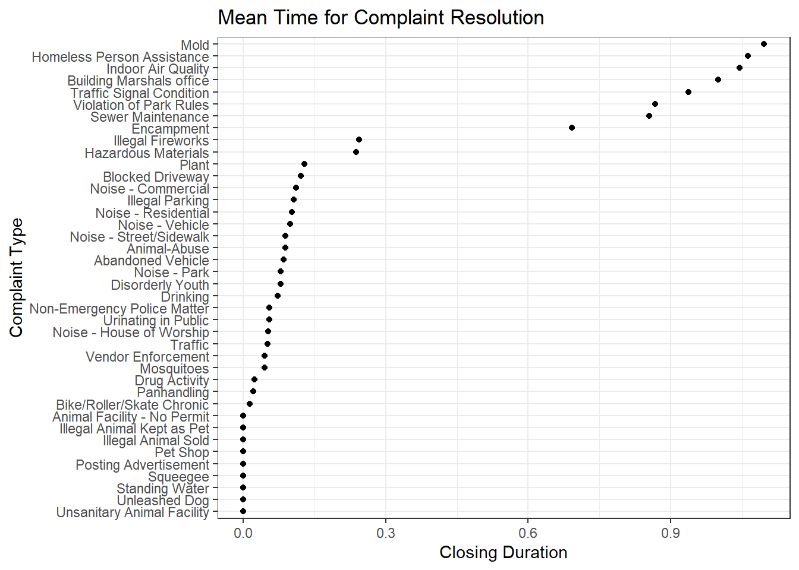
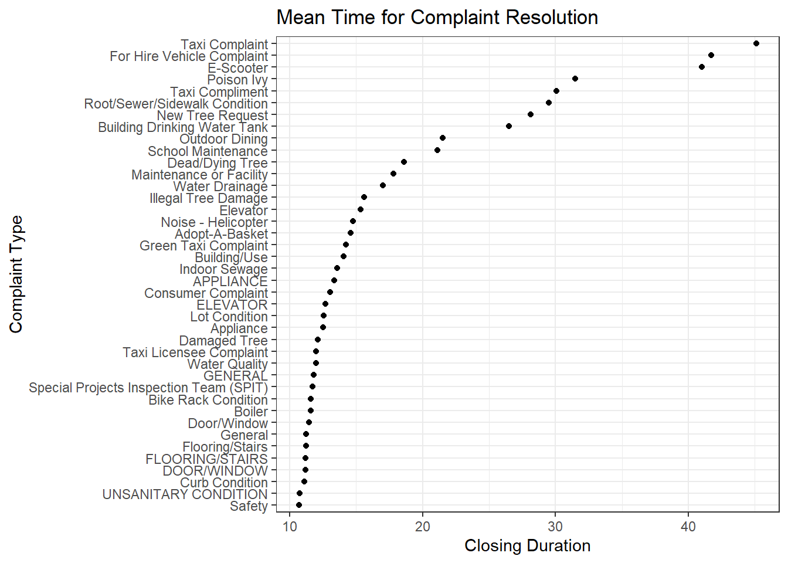
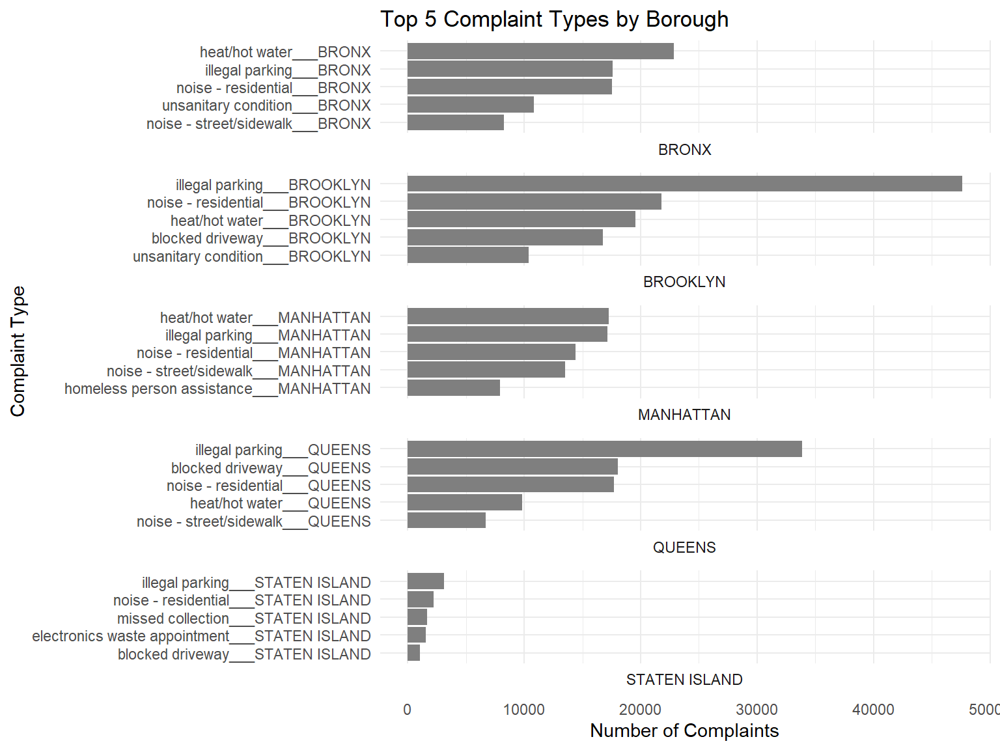
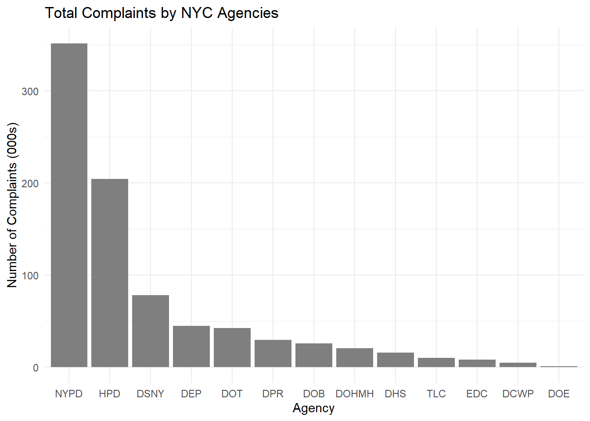
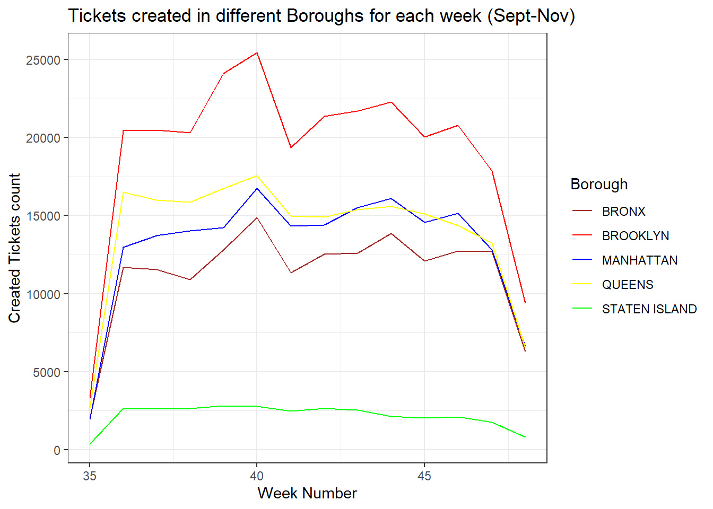
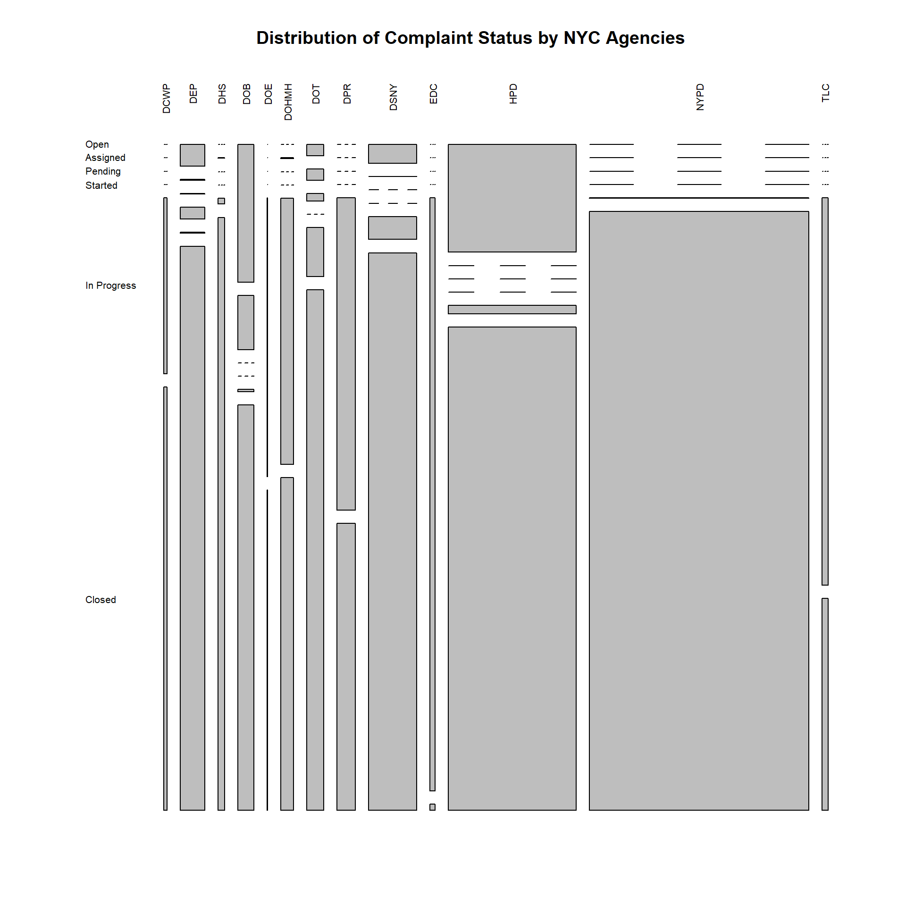

Code
options(warn = -1)
library(ggplot2)
library(dplyr)
library(lubridate)
library(nycgeo)
library(ggridges)
library(vcd)
library(sf)
library(tidyverse,warn.conflicts = FALSE)options(warn = -1)
library(ggplot2)
library(dplyr)
library(lubridate)
library(nycgeo)
library(ggridges)
library(vcd)
library(sf)
library(tidyverse,warn.conflicts = FALSE)service_data = read_csv("C:\\Users\\varun\\Downloads\\311_Service_Requests_from_20230901_to_20231129.csv",show_col_types = FALSE)
service_data <- service_data[,!(
colnames(service_data) %in% c("Vehicle Type", "Due Date", "Facility Type", "Landmark", "City")
)] %>%
filter(Borough!="Unspecified")service_data$`Closed Date` <- date(mdy_hms(service_data$`Closed Date`,tz=Sys.timezone()))
service_data$`Created Date` <- date(mdy_hms(service_data$`Created Date`,tz=Sys.timezone()))
service_data$Closing_Duration <- service_data$`Closed Date` - service_data$`Created Date`Complaints that get resolved the fastest
complaint_duration <- service_data %>%
group_by(`Complaint Type`) %>%
summarise(across(Closing_Duration,mean, na.rm=TRUE))
complaint_duration[order(complaint_duration$Closing_Duration, decreasing = FALSE),] %>%
slice(1:40) %>%
ggplot(aes(x = Closing_Duration, y = fct_rev(
fct_reorder(`Complaint Type`, Closing_Duration, .desc = TRUE)
))) +
geom_point() +
xlab("Closing Duration") +
ylab("Complaint Type") +
ggtitle("Mean Time for Complaint Resolution")+
theme_bw()
Top 40 Complaints that get resolved the slowest
complaint_duration[order(complaint_duration$Closing_Duration, decreasing = TRUE),] %>%
slice(1:40) %>%
ggplot(aes(x = Closing_Duration, y = fct_rev(
fct_reorder(`Complaint Type`, Closing_Duration, .desc = TRUE)
))) +
geom_point() +
xlab("Closing Duration") +
ylab("Complaint Type") +
ggtitle("Mean Time for Complaint Resolution")+
theme_bw()
Comments:
Resolution time for tickets across Boroughs
service_borough <- service_data %>%
group_by(Borough) %>%
summarise(mn_cd = mean(Closing_Duration,na.rm = TRUE)) %>%
arrange(desc(mn_cd)) %>%
rename(
value = mn_cd
) %>%
drop_na(value)
service_borough$b_id <- "0"
service_borough$b_id[service_borough$Borough == 'MANHATTAN'] <- "1"
service_borough$b_id[service_borough$Borough == 'BRONX'] <- "2"
service_borough$b_id[service_borough$Borough == 'BROOKLYN'] <- "3"
service_borough$b_id[service_borough$Borough == 'QUEENS'] <- "4"
service_borough$b_id[service_borough$Borough == 'STATEN ISLAND'] <- "5"
nyc_boundaries(geography = "nta") %>%
left_join(service_borough, by = c("borough_id" = "b_id")) %>%
ggplot() +
geom_sf(aes(fill = value)) +
scale_fill_viridis_c(name = "Mean Resolution Time (Days)", option = "inferno",direction=-1) +
theme_void() +
labs(title = "How fast is the ticket resolution for each Borough?")
Resolution time for tickets across Districts
service_district <- service_data %>%
group_by(`City Council Districts`) %>%
summarise(mn_cd = mean(Closing_Duration, na.rm = TRUE)) %>%
arrange(desc(mn_cd)) %>%
rename(value = mn_cd) %>%
drop_na(value) %>%
mutate(`City Council Districts` = as.character(`City Council Districts`))
nyc_boundaries(geography = "council") %>%
left_join(service_district,
by = c("council_dist_id" = "City Council Districts")) %>%
ggplot() +
geom_sf(aes(fill = value)) +
scale_fill_viridis_c(name = "Mean Resolution Time (Days)",
option = "inferno",
direction = -1) +
theme_void() +
labs(title = "How fast is the ticket resolution for each District?")service_data$week_number <- week(ymd(service_data$`Created Date`))Density Histogram to understand the distribution of ticket creation over each week
ggplot(service_data, aes(x = week_number)) +
geom_histogram(
aes(y = after_stat(density)),
color = "black",
fill = "#CC5500",
binwidth = 1,
right = FALSE
) +
ggtitle("Density Histogram for 311 Tickets created every week (Sept-Nov)") +
theme_bw()
Histogram for ticket creations every week across different Boroughs
ggplot(service_data, aes(x = week_number)) +
geom_bar(color = "black", fill = "#CC5500") +
facet_wrap( ~ Borough) +
ggtitle("Histogram for 311 Tickets created every week (Sept-Nov)") +
theme_bw()
Line plot for easy comparison of ticket creation every week across different Boroughs
aggregate(
service_data$`Complaint Type`,
by = list(service_data$Borough, service_data$week_number),
FUN = length
) %>%
rename(issue_count = x,
week_number = Group.2,
Borough = Group.1) %>%
ggplot(aes(x = week_number, y = issue_count, color = Borough)) +
geom_line() +
ggtitle("Tickets created in different Boroughs for each week (Sept-Nov)") +
labs(x = "Week Number", y = "Created Tickets count") +
theme_bw()
Comments:
There definitely is a pattern as week 40 has the highest ticket creation count across all the Boroughs.
Week 35 and Week 48 have the lowest ticket counts as the dataset from Sept 01 till the Nov29. Sept 01 is a Friday and so week 35 just has ticket counts for Friday and Saturday instead of the entire week. Similary, the entire week data for week 48 was not used.
We now analyze week 40 to understand the type of issue causing the peak
week_40_highest <- aggregate(
service_data$`Complaint Type`,
by = list(service_data$`Complaint Type`,service_data$Borough, service_data$week_number),
FUN = length
) %>%
filter(Group.3 == 40) %>%
group_by(Group.2) %>% summarise(max_x = max(x),.groups = 'drop') %>%
arrange(desc(max_x)) %>%
rename(Borough = Group.2, Tickets = max_x)
aggregate(
service_data$`Complaint Type`,
by = list(service_data$`Complaint Type`,service_data$Borough, service_data$week_number),
FUN = length
) %>%
filter(Group.3 == 40) %>%
arrange(desc(x)) %>%
rename(Issue = Group.1,week_number = Group.3,Borough = Group.2, Tickets = x) %>%
inner_join(week_40_highest,by=c("Borough" = "Borough","Tickets" = "Tickets")) Issue Borough week_number Tickets
1 Illegal Parking BROOKLYN 40 3629
2 Illegal Parking QUEENS 40 2795
3 Illegal Parking MANHATTAN 40 1454
4 Illegal Parking BRONX 40 1445
5 Illegal Parking STATEN ISLAND 40 296Comment:
Although there are many issues contributing to the peak on Week 40, Illegal Parking contributes the most